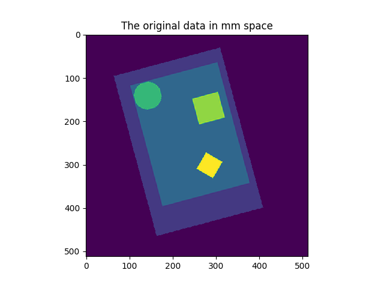
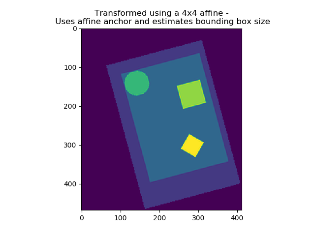
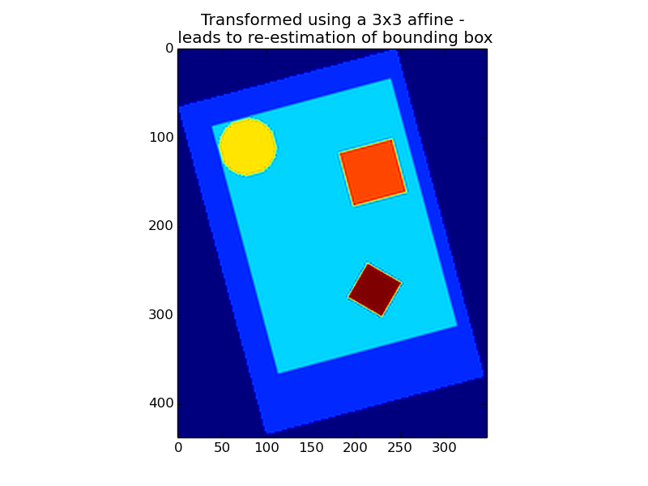

Contents
File names as arguments
Nilearn functions and objects accept file names as arguments:
>>> from nilearn import image
>>> smoothed_img = image.smooth_img('/home/user/t_map001.nii')
Nilearn can operate on either file names or NiftiImage objects. The later represent the specified nifti files loaded in memory.
In nilearn, we often use the term ‘niimg’ as abbreviation that denotes either a file name or a NiftiImage object. In the example above, the function smooth_img returns a NiftiImage object, which can then be readily passed to any other nilearn function that accepts niimg arguments.
Niimgs can be 3D or 4D, and a 4D niimg can be a list of file names, or even a wildcard matching patterns. The ‘~’ symbol is also expanded to the user home folder.For instance, to retrieve a 4D volume of all t maps smoothed:
>>> smoothed_imgs = image.smooth_img('~/t_map*.nii')
In any analysis, the first step is to load the data. It is often convenient to apply some basic data transformations and to turn the data in a 2D (samples x features) matrix, where the samples could be different time points, and the features derived from different voxels (e.g., restrict analysis to the ventral visual stream), regions of interest (e.g., extract local signals from spheres/cubes), or prespecified networks (e.g., look at data from all voxels of a set of network nodes). Think of masker objects as swiss army knifes for shaping the raw neuroimaging data in 3D space into the units of observation relevant for the research questions at hand.
 →
→ 
“masker” objects (found in modules nilearn.input_data) aim at simplifying these “data folding” steps that often preceed the actual statistical analysis.
On an advanced note, the underlying philosophy of these classes is similar to scikit-learn‘s transformers. First, objects are initialized with some parameters guiding the transformation (unrelated to the data). Then the fit() method should be called, possibly specifying some data-related information (such as number of images to process), to perform some initial computation (e.g., fitting a mask based on the data). Finally, transform() can be called, with the data as argument, to perform some computation on data themselves (e.g. extracting time series from images).
Note that the masker objects may not cover all the image transformations for specific tasks. Users who want to make some specific processing may have to call low-level functions (see e.g. nilearn.signal, nilearn.masking).
This section details how to use the NiftiMasker class. NiftiMasker is a powerful tool to load images and extract voxel signals in the area defined by the mask. It is designed to apply some basic preprocessing steps by default with commonly used parameters as defaults. But it is very important to look at your data to see the effects of the preprocessings and validate them.
In particular, NiftiMasker is a scikit-learn compliant transformer so that you can directly plug it into a scikit-learn pipeline.
Sometimes, some custom preprocessing of data is necessary. For instance we can restrict a dataset to the first 100 frames. Below, we load a resting-state dataset with fetch_fetch_nyu_rest(), restrict it to 100 frames and build a brand new Nifti-like object to give it to the masker. Although possible, there is no need to save your data to a file to pass it to a NiftiMasker. Simply use nibabel to create a Niimg in memory:
nyu_dataset = datasets.fetch_nyu_rest(n_subjects=1)
nyu_filename = nyu_dataset.func[0]
nyu_img = nibabel.load(nyu_filename)
# Restrict nyu to 100 frames to speed up computation
from nilearn.image import index_img
nyu_img = index_img(nyu_img, slice(0, 100))
In this tutorial, we show how the masker object can compute a mask automatically for subsequent statistical analysis. On some datasets, the default algorithm may however perform poorly. This is why it is very important to always look at your data before and after feature engineering using masker objects.
Note
The full example described in this section can be found here: plot_mask_computation.py. It is also related to this example: plot_nifti_simple.py.
If a mask is not specified as an argument, NiftiMasker will try to compute one from the provided neuroimaging data. It is very important to verify the quality of the generated mask by visualization. This allows to see whether it is suitable for your data and intended analyses. Alternatively, the mask computation parameters can still be modified. See the NiftiMasker documentation for a complete list of mask computation parameters.
As a first example, we will now automatically build a mask from a dataset. We will here use the Haxby dataset because it provides the original mask that we can compare the data-derived mask against.
The first step is to generate a mask with default parameters and visualize it.
# We need to specify an 'epi' mask_strategy, as this is raw EPI data
masker = NiftiMasker(mask_strategy='epi')
masker.fit(nyu_img)
plot_roi(masker.mask_img_, nyu_mean_img, title='EPI automatic mask')
We can then fine-tune the outline of the mask by increasing the number of opening steps (opening=10) using the mask_args argument of the NiftiMasker. This effectively performs erosion and dilation operations on the outer voxel layers of the mask, which can for example remove remaining skull parts in the image.
masker = NiftiMasker(mask_strategy='epi', mask_args=dict(opening=10))
masker.fit(nyu_img)
plot_roi(masker.mask_img_, nyu_mean_img, title='EPI Mask with strong opening')
Looking at the nilearn.masking.compute_epi_mask called by the NiftiMasker object, we see two interesting parameters: lower_cutoff and upper_cutoff. These set the grey-value bounds in which the masking algorithm will search for its threshold (0 being the minimum of the image and 1 the maximum). We will here increase the lower cutoff to enforce selection of those voxels that appear as bright in the EPI image.
masker = NiftiMasker(mask_strategy='epi',
mask_args=dict(upper_cutoff=.9, lower_cutoff=.8,
opening=False))
masker.fit(nyu_img)
plot_roi(masker.mask_img_, nyu_mean_img,
title='EPI Mask: high lower_cutoff')
###############################################################################
# Extract time series
# trended vs detrended
trended = NiftiMasker(mask_strategy='epi')
detrended = NiftiMasker(mask_strategy='epi', detrend=True)
trended_data = trended.fit_transform(nyu_img)
detrended_data = detrended.fit_transform(nyu_img)
print("Trended: mean %.2f, std %.2f" %
(np.mean(trended_data), np.std(trended_data)))
print("Detrended: mean %.2f, std %.2f" %
(np.mean(detrended_data), np.std(detrended_data)))
show()
See also
If you do not want to use the NiftiMasker to perform these simple operations on data, note that they can also be manually accessed in nilearn such as in corresponding functions.
NiftiMasker and many similar classes enable resampling (recasting of images into different resolutions and transformations of brain voxel data). The resampling procedure takes as input the target_affine to resample (resize, rotate...) images in order to match the spatial configuration defined by the new affine (i.e., matrix transforming from voxel space into world space). Additionally, a target_shape can be used to resize images (i.e., cropping or padding with zeros) to match an expected data image dimensions (shape composed of x, y, and z).
As a common use case, resampling can be a viable means to downsample image quality on purpose to increase processing speed and lower memory consumption of an analysis pipeline. In fact, certain image viewers (e.g., FSLView) also require images to be resampled to display overlays.
On an advanced note, automatic computation of offset and bounding box can be performed by specifying a 3x3 matrix instead of the 4x4 affine. In this case, nilearn computes automatically the translation part of the transformation matrix (i.e., affine).
  Special case: resampling to a given voxel size
Specifying a 3x3 matrix that is diagonal as a target_affine fixes the voxel size. For instance to resample to 3x3x3 mm voxels:
>>> import numpy as np
>>> target_affine = np.diag((3, 3, 3))
See also
NiftiMasker can further be used for local spatial filtering of the neuroimaging data to make the data more homogeneous and thus account for inter-individual differences in neuroanatomy. It is achieved by passing the full-width half maximum (FWHM; in millimeter scale) along the x, y, and z image axes by specifying the smoothing_fwhm parameter. For an isotropic filtering, passing a scalar is also possible. The underlying function handles properly the tricky case of non-cubic voxels by scaling the given widths appropriately.
See also
Rather than optimizing spatial properties of the neuroimaging data, the user may want to improve aspects of temporal data properties, before conversion to voxel signals. NiftiMasker can also process voxel signals. Here are the possibilities:
Exercise
You can, more as a training than as an exercise, try to play with the parameters in Simple example of decoding: the Haxby data. Try to enable detrending and run the script: does it have a big impact on the result?
See also
Once voxel signals have been processed, the result can be visualized as images after unmasking (masked-reduced data transformed back into the original whole-brain space). This step is present in almost all the examples provided in nilearn. Below you will find an excerpt of the example performing Anova-SVM on the Haxby data):
coef = svc.coef_
# reverse feature selection
coef = feature_selection.inverse_transform(coef)
# reverse masking
weight_img = nifti_masker.inverse_transform(coef)
Examples to better understand the NiftiMasker
The purpose of NiftiLabelsMasker and NiftiMapsMasker is to compute signals from regions containing many voxels. They make it easy to get these signals once you have an atlas or a parcellation into brain regions.
Nilearn understands two different ways of defining regions, which are called labels and maps, handled by NiftiLabelsMasker and NiftiMapsMasker, respectively.
Note
These usage are illustrated in the section Extracting times series to build a functional connectome
Usage of NiftiLabelsMasker is similar to that of NiftiMapsMasker. The main difference is that it requires a labels image instead of a set of maps as input.
The background_label keyword of NiftiLabelsMasker deserves some explanation. The voxels that correspond to the brain or a region of interest in an fMRI image do not fill the entire image. Consequently, in the labels image, there must be a label value that corresponds to “outside” the brain (for which no signal should be extracted). By default, this label is set to zero in nilearn (refered to as “background”). Should some non-zero value encoding be necessary, it is possible to change the background value with the background_label keyword.
This atlas defines its regions using maps. The path to the corresponding file is given in the “maps_img” argument.
One important thing that happens transparently during the execution of NiftiMasker.fit_transform is resampling. Initially, the images and the atlas do typically not have the same shape nor the same affine. Casting them into the same format is required for successful signal extraction The keyword argument resampling_target specifies which format (i.e., dimensions and affine) the data should be resampled to. See the reference documentation for NiftiMapsMasker for every possible option.
The purpose of NiftiSpheresMasker is to compute signals from seeds containing voxels in spheres. It makes it easy to get these signals once you have a list of coordinates. A single seed is a sphere defined by the radius (in millimeters) and the coordinates (typically MNI or TAL) of its center.
Using NiftiSpheresMasker needs to define a list of coordinates. “seeds” argument takes a list of 3D coordinates (tuples) of the spheres centers, they should be in the same space as the images. Seeds can overlap spatially and are represented in a binary present-nonpresent coding (no weighting). Below is an example of a coordinates list of four seeds from the default mode network:
>>> dmn_coords = [(0, -52, 18), (-46, -68, 32), (46, -68, 32), (0, 50, -5)]
“radius” is an optional argument that takes a real value in millimeters. If no value is given for the “radius” argument, the single voxel at the given seed position is used.
Examples